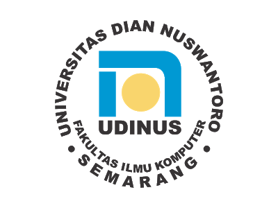

|  |
|
|||||||||||||||||||||||||||
| No | Kode MK | Nama Mata Kuliah | SKS | T/P | STS | Mdl | Kelp. | Jadwal 1 | Jadwal 2 | Jadwal 3 | |||
| Hari & Jam | Ruang | Hari & Jam | Ruang | Hari & Jam | Ruang | ||||||||
| 1 | A11.54301 | PROBABILITAS & STATISTIK | 3 | T | B | - | A11.4310 | SENIN, 09.30-12.00 | H.3.8 | ||||
| 2 | A11.54302 | MATEMATIKA DISKRIT | 3 | T | B | - | A11.4301 | RABU, 09.30-12.00 | H.3.8 | ||||
| 3 | A11.54303 | MATRIKS & RUANG VEKTOR | 3 | T | B | - | A11.4306 | KAMIS, 07.00-09.30 | H.3.2 | ||||
| 4 | A11.54306 | STRUKTUR DATA | 4 | TP | B | - | A11.4306 | SELASA, 07.00-08.40 | H.3.3 | KAMIS, 10.20-12.00 | D.2.H | ||
| 5 | A11.54314 | PEMROGRAMAN BERBASIS WEB | 2 | T | B | - | A11.4320 | JUMAT, 14.10-16.20 | D.2.D | ||||
| 6 | A11.54403 | ORGANISASI DAN ARSITEKTUR KOMPUTER | 3 | T | B | - | A11.4310 | RABU, 07.00-09.30 | H.4.10 | ||||
| 7 | N201706 | PENDIDIKAN KEWARGANEGARAAN | 3 | T | B | - | N6004 | SELASA, 16.20-18.00 | AULA | ||||
| Jumlah SKS | 20 | ||||||||||||
| printed on |
| Generated by SIAdin System |
| © PSI UDINUS |
| Dosen Wali | Semarang,05 Oktober 2018 | |
| Kepala Tata Usaha | ||
| Fakultas ILMU KOMPUTER | ||
| Ajib Susanto M.Kom | ||
| -Setiap semester wajib melakukan Heregistrasi dengan cara input KRS. | ||
| -Mahasiswa wajib melakukan perwalian sebelum dan sesudah input KRS dan KRS wajib diverifikasi oleh dosen wali | ||
| -Setelah diverifikasi, silahkan cetak kembali untuk ditandatangani oleh dosen wali dan distempel oleh TU masing-masing. | ||
| -DIWAJIBKAN untuk menyimpan file PDF dari KRS ini jika di kemudian hari sewaktu-waktu dibutuhkan KRS semester dan tahun ajaran saat ini. | ||
| -Simpanlah KRS, KHS, dan Transkrip anda pada http://drive.google.com dengan id email anda 111201710535@mhs.dinus.ac.id. | ||
| -Gunakan email 111201710535@mhs.dinus.ac.id anda untuk keperluan akademik dansinkronisasikan dengan smartphone anda. | ||